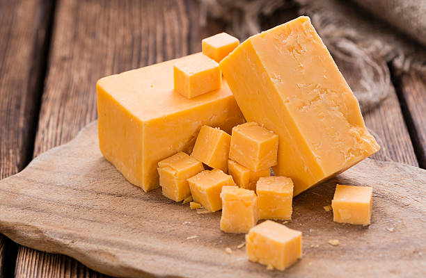
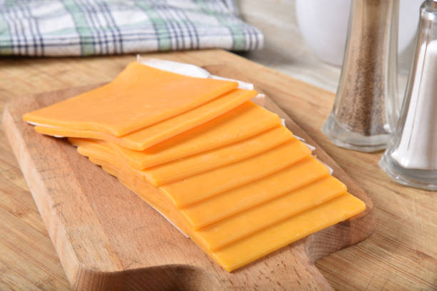

This image above is a swiss cheese. Usually, fermented- thus having it's iconic holes.
Possible a cheese from swisterland.

A hard cheese, mostly used to grind with a cheese grater on pasta.
A soft cheese, grated for quesodillas.
Handful of cheeses, from soft to hard cheeses.
Kraft's American Cheese Singles.
Classic Kraft cheese slices in a stack

Most likely american cheese placed on a cuttng board